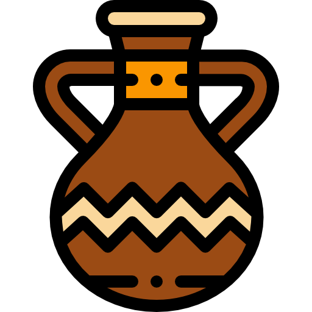

Esta página web tiene la finalidad de proveer información sobre el armadillo respecto a sus características como especie, sus atributos poblacionales, la importancia que ha tenido en la relación con las culturas prehispánicas, su uso con fines medicinales y gastronómicos, y una galería fotográfica sobre el armadillo y su ambiente.De igual forma a continuación se muestra parte del material audiovisual utilizado en la producción, elaboración y desarrollo de la página y de los audios que en esta se encuentran.
Armadillo como especie
Atributos poblacionales
Relación con las culturas prehispánicas

Consumo medicinal y gastronómico

Galería